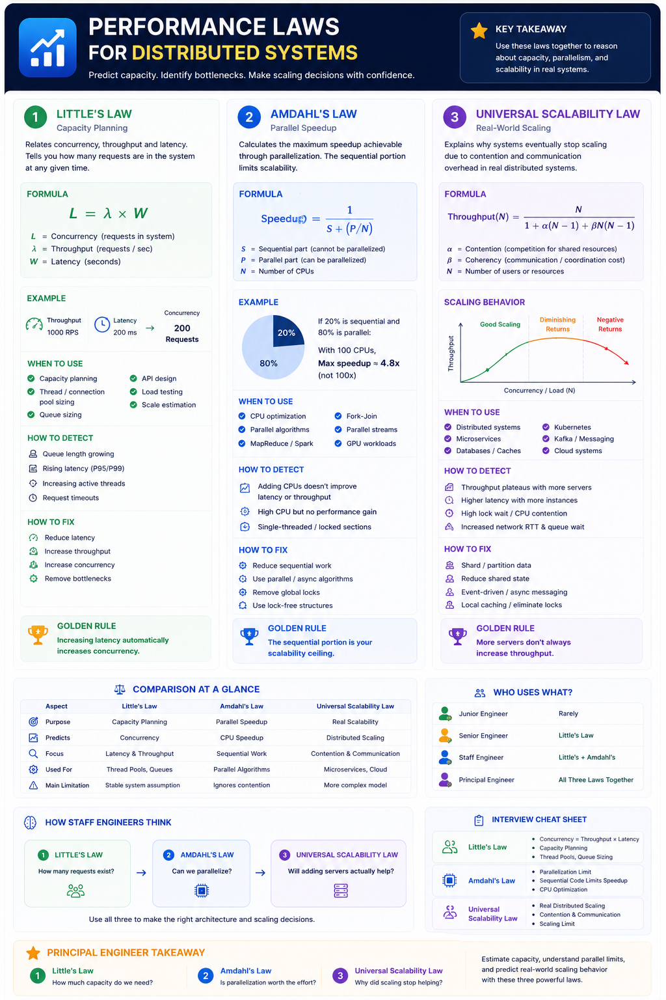

Little's Law • Amdahl's Law • Universal Scalability Law
Why These Laws Matter
These laws help engineers predict system capacity, identify bottlenecks, and make scaling decisions instead of guessing.
Staff/Principal Engineers are expected to know: when to apply each law • what problem it solves • how to identify violations in production • design implications • trade-offs
Relates concurrency, throughput and latency
L = λ × W
| Symbol | Meaning |
|---|---|
L | Concurrency (Requests in system) |
λ | Throughput (Requests/sec) |
W | Latency (Seconds) |
Example
When to Use
Failure Symptoms
How to Fix
Staff Thinking
Why is latency high?
Is latency causing a concurrency explosion?
Golden Rule
Increasing latency automatically increases concurrency.
Interview Q: How many threads if API handles 2000 RPS at 100 ms latency? A: 2000 × 0.1 = 200 threads
Maximum speedup achievable through parallelisation
Speedup = 1 / (S + P/N)
| Symbol | Meaning |
|---|---|
S | Sequential portion (cannot be parallelised) |
P | Parallel portion |
N | Number of CPUs |
Example
When to Use
Failure Symptoms
How to Fix
Staff Thinking
How many CPUs should we add?
What percentage is actually parallelisable?
Golden Rule
The sequential portion is your scalability ceiling.
Interview Q: Why doesn't doubling CPUs double throughput? A: The sequential portion is never reduced by adding CPUs — Amdahl's Law.
Why systems stop scaling due to contention & coordination overhead
Throughput(N) = N / (1 + α(N-1) + βN(N-1))
| Symbol | Meaning |
|---|---|
α | Contention (competition for shared resources) |
β | Coherency (communication / coordination cost) |
N | Number of users or resources |
Scaling Phases
When to Use
Failure Symptoms
How to Fix
Staff Thinking
Add more servers
What shared resource is limiting scaling?
Golden Rule
More servers don't always increase throughput.
Comparison at a Glance
| Aspect | Little's Law | Amdahl's Law | USL |
|---|---|---|---|
| Purpose | Capacity Planning | Parallel Speedup | Real Scalability |
| Predicts | Concurrency | CPU Speedup | Distributed Scaling |
| Focus | Latency & Throughput | Sequential Work | Contention & Comm. |
| Used For | Thread Pools, Queues | Parallel Algorithms | Microservices, Cloud |
| Limitation | Stable system only | Ignores contention | More complex model |
Who Uses What?
| Engineer Level | Laws Used |
|---|---|
| Junior | Rarely |
| Senior | Little's Law |
| Staff | Little's Law + Amdahl's Law |
| Principal | All three together |
How Staff Engineers Think — The Decision Chain
Interview Cheat Sheet
Principal Engineer Takeaway
Little's Law
How much capacity do we need?
Amdahl's Law
Is parallelisation worth the effort?
USL
Why did scaling stop helping?
Together: Estimate capacity (Little's) → Estimate max parallel speedup (Amdahl) → Predict real-world scaling limits (USL). The most valuable performance mental model for large-scale distributed systems.
